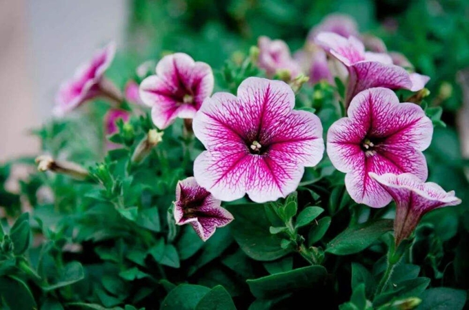

矮牵牛怎么养，与百万小玲的区别？

矮牵牛按品种来说，这是属于茄科植物，属于多年生的草本植物，一般植株能长到20~45cm左右，矮牵牛的生命力顽强，生存能力极强，在某些领域中，矮牵牛还会成为一种野花，这个矮牵牛的生长速度极快，有时不是认为能够控制的，先来讲讲一下矮牵牛的生长习性吧！
矮牵牛是一种喜好阳光的一种植株，温暖和阳光成为生长的必须要求，这种植株是不耐霜冻和怕雨水的的植物，在夏季的时候，矮牵牛的生长非常的旺盛，但是花也非常容易凋谢。
分布范围
矮牵牛最开始产自与南美洲的阿根廷，但是由于生长条件的要求不高，所以在全世界都有所分布，也就是说矮牵牛是属于一种杂交的品种。
也就是因为矮牵牛的广泛分布，也因此在全球各地产生了各种不同的品种，下面就简单的介绍一下矮牵牛的各类品种吧！
本站文章均来自互联网，仅供学习参考，如有侵犯您的版权，请邮箱联系我们删除！
 上一篇
上一篇